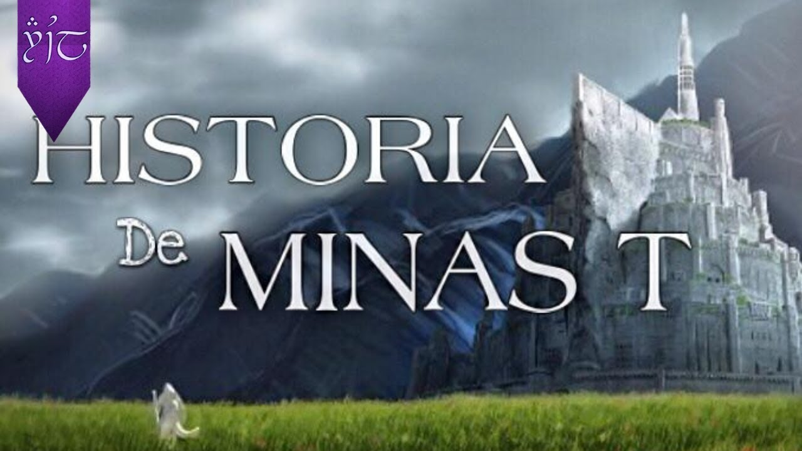

Minas Tirith significa Torre de la Guardia, en la lengua de los sindar. Sus orígenes se remontan a la Primera Edad,
cuando Finrod Felagund construyó la primera torre como vigía del paso norte del río Sirion. En aquellos inicios fue
tomada por Sauron, aunque más tarde fue reconquistada con la ayuda de Lúthien, beren y Huan.
Pocos años después de la fundación de Gondor sirvió para defender a sus habitantes de los hombres salvajes que vivían en
los valles de las Montañas Blancas. El lugar era también un paso estratégico entre el extremo oriental de las Montañas
Blancas y el Ephel Dúath, muro occidental de las montañas de Mordor. En ese entonces, su nombre era Minas Anor, la
“Torre del Sol Poniente”.
Su apariencia fue cambiando poco a poco durante los largos siglos de su existencia, así como su función, pues primero
fue un puesto avanzado y residencia del príncipe Anárion, luego la residencia veraniega del rey, luego la morada real
permanente y finalmente capital del Reino (en lugar de Osgiliath).
Minas Anor era la torre gemela de Minas Ithil, lugar de residencia del príncipe Isildur en sus orígenes. Ambos príncipes
reinaban en Osgiliath y utilizaban las torres como residencia.
De los tesoros más preciados de los númenóreanos que llegaron a través del mar hasta el reino de Gondor, destacaban dos:
las Siete Piedras y el Árbol Blanco. De las Siete Piedras, una se guardó en Minas Anor.
Por otro lado, el Árbol Blanco, vástago del Nimloth de Númenor, fue plantado en Minas Ithil, pero cuando Sauron volvió
de la destrucción de Númenor, se hizo fuerte en Mordor y preparó una guerra contra los supervivientes del desastre,
atacó Gondor y ocupó Minas Ithil en 3429 de la Segunda Edad, quemando el Árbol. Sin embargo, Isildur logró salvar un
pequeño vástago del Árbol y huyó. Finalmente, el vástago fue plantado en la ciudadela de Minas Anor por Isildur, después
que la Última Alianza hubiera vencido a Sauron, y en memoria de su hermano Anárion, muerto durante la batalla.
Durante la Tercera Edad, Minas Anor fue reconstruida por el Rey Ostoher en el 420. Más adelante, durante la Gran Peste
del 1636, murió el Árbol Blanco de Minas Anor junto con muchos habitantes del reino de Gondor. Osgiliath se fue vaciando
de gente y Minas Ithil fue abandonada. El rey Tarondor trasladó el trono de Osgiliath a Minas Anor en 1640, plantando un
último vástago del Árbol Blanco en la ciudadela.
El 1900, después de los ataques de los Aurigas, el rey Calimehtar levantó la Torre Blanca en la ciudadela de Minas Anor,
que se empezó a llamar Minas Tirith, la Torre de Guardia, sobretodo después de la caída de Minas Ithil en 2002 (y
reconvertida en Minas Morgul). La misma Torre Blanca fue reconstruida por el Senesecal Ecthelion I ya en un tardío 2698.
En 2852 de la Tercera Edad murió el Árbol Blanco sin encontrar ningún vástago, por lo que se dejó en pie el Árbol
Muerto.
Durante la Guerra del Anillo, Minas Tirith fue el principal artífice defensivo en Gondor contra los ejércitos de Sauron.
Desde su construcción nunca había sido atacada, pero en el 3019 fue sitiada por el Rey Brujo y grandes ejércitos de
Mordor, que rompieron sus Grandes Puertas con el ariete Grond. Sin embargo, la llegada de los rohirrim impidió la
captura y saqueo de Minas Tirith, y fue tan solamente el Rey Brujo el primer y único enemigo que pudo poner los pies
dentro de las murallas, en el Patio detrás de las Grandes Puertas, y por poco espacio de tiempo.
La batalla de los Campos de Pelennor puede ser estudiada con mas detalle en el siguiente video.
Después de la destrucción del Anillo, el rey Elessar encontró un último vástago del Árbol Blanco en las montañas y así
pudo retirarse el Árbol Muerto en el Patio del Árbol. Por otra parte, los Enanos de Aglarond, bajo las órdenes de Gimli,
reconstruyeron la Gran Puerta. Minas Tirith siguió siendo capital de Gondor durante la Cuarta Edad.
Historia

La historia de Minas Tirith es muy extensa, si desea consultar mas información por favor visite este
sitio